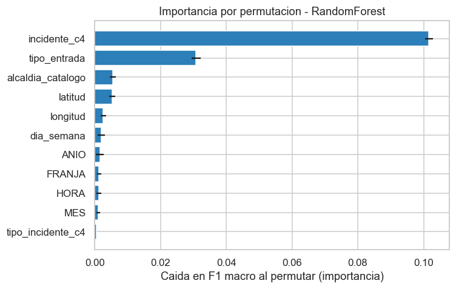
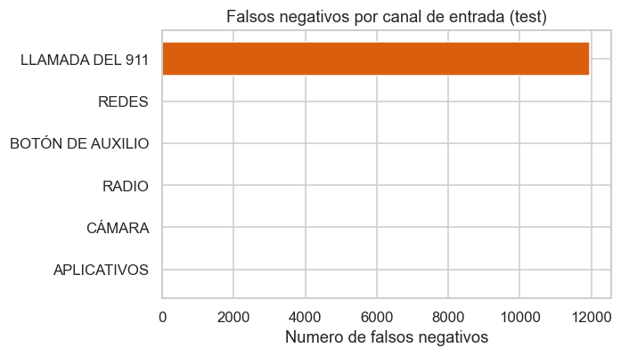
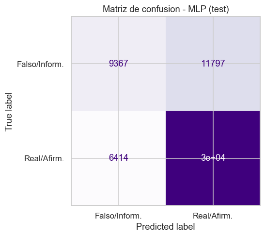
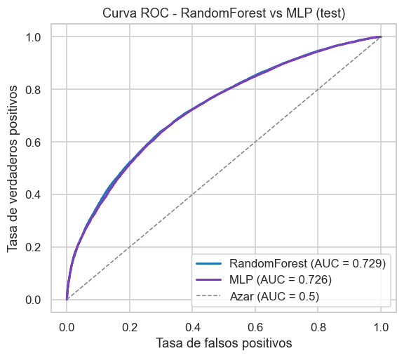

Triage de reportes de incidentes viales del C5 (CDMX 2022-2024)
Proyecto Final - Almacenes y Mineria de Datos
Profesora: Jessica Santizo Galicia Ayudantes: Diego Antonio Villalba Gonzalez y Ares Gael Castro Romero Integrante: Jose Ruben Alfaro Gonzalez — No. de cuenta: 320516436 Fecha: 10-06-2026
En este cuaderno entrenamos un clasificador para el triage de reportes viales: predecir, en el momento en que entra un reporte (ya no duplicado) al C5, si terminara confirmandose como un incidente real / afirmativo (REAL = 1) o como un reporte falso / informativo (REAL = 0).
El patron Pipeline aparece en dos niveles: la preparacion de datos (notebook 01) y aqui el modelo, armado como Pipeline de scikit-learn (codificacion -> RandomForest) en un solo objeto. La semilla 42 se fija en todo split, modelo y muestreo para reproducibilidad.
1. Carga de datos y construccion de X, y
Leemos el dataset de trabajo c5_listo.parquet: ya esta depurado en el notebook 01 con el patron Pipeline de preparacion (sin duplicados D, sin el ano-ruido 2021) y trae el target REAL correcto. Las rutas se resuelven con pathlib relativas a la ubicacion del notebook (notebooks/), de modo que el cuaderno funcione sin importar el directorio de trabajo.
import numpy as npimport pandas as pdimport matplotlib.pyplot as pltimport seaborn as snsfrom pathlib import Pathimport sysSEED =42np.random.seed(SEED)sns.set_theme(style="whitegrid")plt.rcParams["figure.dpi"] =110BASE = Path.cwd() if (Path.cwd() /"data").exists() else Path.cwd().parentDATA = BASE /"data"MODELS = BASE /"models"FIGURES = BASE /"figures"MODELS.mkdir(exist_ok=True)FIGURES.mkdir(exist_ok=True)# Codigo fuente en src/: clasificadores (RandomForest y MLP) y config.ifstr(BASE) notin sys.path: sys.path.insert(0, str(BASE))from src import configfrom src.modelado import ModeloRandomForest, ModeloMLP# Dataset de trabajo: depurado y con el target REAL definitivo (notebook 01).df = pd.read_parquet(DATA /"c5_listo.parquet")print("Filas x columnas:", df.shape)df.head(3)
Filas x columnas: (289885, 18)
folio
REAL
CIERRE_DESC
codigo_cierre
HORA
MES
ANIO
latitud
longitud
tipo_incidente_c4
incidente_c4
tipo_entrada
alcaldia_catalogo
dia_semana
FRANJA
clas_con_f_alarma
TIEMPO_CIERRE_MIN
FECHA_CREACION
0
C2C/20220101/00012
1
Afirmativo (real)
A
1
1
2022
19.41525
-99.14832
Accidente
Choque con lesionados
BOTÓN DE AUXILIO
Cuauhtémoc
Sábado
Madrugada
URGENCIAS MEDICAS
293.550000
2022-01-01 01:06:39
1
C2C/20220101/00070
1
Afirmativo (real)
A
9
1
2022
19.443649
-99.165781
Accidente
Motociclista
RADIO
Miguel Hidalgo
Sábado
Mañana
URGENCIAS MEDICAS
182.283333
2022-01-01 09:51:53
2
C2N/20220101/00101
1
Afirmativo (real)
A
9
1
2022
19.45163
-99.05469
Accidente
Choque sin lesionados
BOTÓN DE AUXILIO
Gustavo A. Madero
Sábado
Mañana
EMERGENCIA
187.233333
2022-01-01 09:56:54
# Listas de features tomadas de src/config.py (fuente unica de verdad).numericas = config.NUMERICAScategoricas = config.CATEGORICAS# X = solo las features (sin fugas ni identificadores); y = REAL.X = df[numericas + categoricas].copy()y = df["REAL"].astype(int)# pandas 3.0: castear categoricas -> object y numericas -> float64 para sklearn.X[categoricas] = X[categoricas].astype("object")X[numericas] = X[numericas].astype("float64")print("X:", X.shape, "| y balance:")print(y.value_counts(normalize=True).round(4).rename("proporcion"))
X: (289885, 11) | y balance:
REAL
1 0.635
0 0.365
Name: proporcion, dtype: float64
Lo que observamos. El conjunto de trabajo tiene ~290 mil reportes (ya sin duplicados) y la clase objetivo esta desbalanceada hacia los reportes confirmados. Cerca del 63.5 % son REAL = 1 (cierre afirmativo) y el 36.5 % son REAL = 0 (falsos o informativos). Este desbalance implica que la accuracy por si sola sera engañosa (un modelo que prediga siempre “real” ya acierta ~63.5 %), por lo que más adelante priorizaremos el F1 macro, que pondera por igual ambas clases.
2. El objetivo y por que excluimos ciertas columnas
Objetivo: Al recibir un reporte vial, el C5 debe decidir con que prioridad atenderlo. Queremos predecir si ese reporte se confirmara como real / afirmativo (REAL = 1, cierre A) frente a falso o informativo (REAL = 0, cierres F/I), usando solo informacion disponible en el instante de la recepcion: hora, fecha, ubicacion, tipo de incidente y canal de entrada. Así el modelo puede apoyar la asignacion de recursos en tiempo real.
Los duplicados ya no estan. Un cierre D (Duplicado) es un evento real ya reportado. Identificarlo es tarea del sistema de despacho (verificar si ya hay una unidad en el sitio), no del modelo de veracidad. Por eso los duplicados se eliminaron en la preparacion del notebook 01 y aqui ya no aparecen.
Nota anti-fuga. Excluimos a proposito dos columnas porque se conocen despues del cierre del reporte, no al recibirlo:
TIEMPO_CIERRE_MIN: la duracion total hasta cerrar el caso. Es una fuga grosera (el tiempo de cierre se conoce solo al cerrar y mezcla el desenlace).
clas_con_f_alarma: una clasificacion fina de la alarma cuya categoria FALSA ALARMA es una etiqueta posterior al cierre (practicamente el target).
Tambien excluimos identificadores y derivados del propio target (folio, codigo_cierre, CIERRE_DESC, FECHA_CREACION). Incluirlos inflaria las metricas y produciria un modelo inutil en produccion, donde esas columnas aun no existen. En la seccion 10 lo demostramos empiricamente.
3. Particion entrenamiento / prueba
Partimos 80 / 20 de forma estratificada por el target (para conservar el balance 63.5 / 36.5 en ambos lados) con random_state=42.
Para comparar, usamos DummyClassifier(strategy="most_frequent"), que siempre predice la clase mayoritaria. Como la mayoria es REAL = 1 (afirmativo, 63.5 %), el baseline predecira “real” para todo. Es el piso minimo que cualquier modelo útil debe superar.
from sklearn.dummy import DummyClassifierfrom sklearn.metrics import accuracy_score, f1_scoredummy = DummyClassifier(strategy="most_frequent", random_state=SEED)dummy.fit(X_train, y_train)y_pred_dummy = dummy.predict(X_test)acc_dummy = accuracy_score(y_test, y_pred_dummy)f1m_dummy = f1_score(y_test, y_pred_dummy, average="macro")print("Clase que predice el baseline:", int(pd.Series(y_pred_dummy).mode()[0]))print(f"Baseline -> accuracy = {acc_dummy:.4f} | F1 macro = {f1m_dummy:.4f}")
Clase que predice el baseline: 1
Baseline -> accuracy = 0.6350 | F1 macro = 0.3884
Lo que observamos. El baseline alcanza ~63.5 % de accuracy pero un F1 macro de solo ~0.39: al mandar todo a “real” no detecta ningun reporte falso, algo inservible para filtrar el ruido operativo. Esto vuelve a confirmar que la accuracy engaña y fija la vara que el RandomForest y el MLP deberan superar en F1 macro.
5. Modelo con el patron Pipeline: ColumnTransformer + RandomForestClassifier
Aqui aplicamos el patron Pipeline a nivel de modelo. Un Pipeline de scikit-learn encadena etapas secuenciales. Primero la codificacion de variables y luego el clasificador en un unico objeto reutilizable. Es el mismo patrón de diseño que la clase PipelinePreparacion del notebook 01, pero usando la implementacion estandar de la libreria:
Preprocesamiento (ColumnTransformer):
Categoricas:SimpleImputer(strategy="most_frequent") (unas pocas filas tienen NaN en tipo_entrada/alcaldia_catalogo) seguido de OneHotEncoder(handle_unknown="ignore"), que evita romper si en test aparece una categoria no vista.
Numericas:"passthrough". Un RandomForest se basa en cortes por umbral, asi que no necesita escalado. Pasarlas tal cual mantiene el codigo simple.
Clasificador:RandomForestClassifier(n_estimators=300, class_weight="balanced", random_state=42, n_jobs=-1). El class_weight="balanced" compensa el desbalance de clases.
Encadenar prep -> clf en un Pipeline garantiza que el mismo preprocesamiento se aplique de forma identica en entrenamiento, validacion cruzada, test y produccion.
# Patron Pipeline (prep -> RandomForest) construido por src/modelado.# ModeloRandomForest arma el ColumnTransformer (one-hot a categoricas,# passthrough a numericas) + RandomForest balanceado en un solo objeto.pipe = ModeloRandomForest(numericas, categoricas).construir(n_jobs=-1)pipe.fit(X_train, y_train)print("Pipeline (prep -> RandomForest) entrenado.")pipe
In a Jupyter environment, please rerun this cell to show the HTML representation or trust the notebook. On GitHub, the HTML representation is unable to render, please try loading this page with nbviewer.org.
El Pipeline ajusta el one-hot y el bosque en un solo objeto: al llamar fit/predict sobre el pipeline, las etapas se ejecutan en orden automaticamente. Antes de medir en test, hacemos un ajuste de hiperparametros breve para elegir la profundidad y el tamano de hoja.
6. Ajuste de hiperparametros (GridSearch pequeño)
from sklearn.model_selection import StratifiedShuffleSplit, GridSearchCV# Submuestra estratificada de ~80k del train para acelerar la busqueda.sss = StratifiedShuffleSplit(n_splits=1, train_size=80000, random_state=SEED)idx_sub, _ =next(sss.split(X_train, y_train))X_sub = X_train.iloc[idx_sub]y_sub = y_train.iloc[idx_sub]print("Submuestra de tuning:", X_sub.shape[0])malla = {"clf__max_depth": [None, 20],"clf__min_samples_leaf": [1, 20],}gs = GridSearchCV(pipe, malla, scoring="f1_macro", cv=3, n_jobs=-1)gs.fit(X_sub, y_sub)print("Mejor combinacion:", gs.best_params_)print(f"F1 macro CV (submuestra) = {gs.best_score_:.4f}")
Submuestra de tuning: 80000
Mejor combinacion: {'clf__max_depth': 20, 'clf__min_samples_leaf': 1}
F1 macro CV (submuestra) = 0.6566
# Resumen de las 4 combinaciones evaluadas.res = pd.DataFrame(gs.cv_results_)cols = ["param_clf__max_depth", "param_clf__min_samples_leaf", "mean_test_score", "std_test_score"]res[cols].sort_values("mean_test_score", ascending=False).round(4)
param_clf__max_depth
param_clf__min_samples_leaf
mean_test_score
std_test_score
2
20
1
0.6566
0.0023
3
20
20
0.6548
0.0015
1
None
20
0.6546
0.0021
0
None
1
0.6207
0.0015
# Reentrenamos el ganador sobre el TRAIN COMPLETO (misma clase de src/).best_params = gs.best_params_modelo = ModeloRandomForest(numericas, categoricas).construir( max_depth=best_params["clf__max_depth"], min_samples_leaf=best_params["clf__min_samples_leaf"], n_jobs=4)modelo.fit(X_train, y_train)print("Modelo ganador reentrenado en el train completo con:", best_params)
Modelo ganador reentrenado en el train completo con: {'clf__max_depth': 20, 'clf__min_samples_leaf': 1}
La busqueda compara cuatro configuraciones de profundidad/regularizacion. El ganador (impreso arriba) es el que maximiza el F1 macro en validacion cruzada. Lo reentrenamos sobre todo el train para no desperdiciar datos antes de la evaluacion final.
7. Evaluacion completa en el conjunto de prueba
Reportamos accuracy, precision/recall/F1 en versiones macro y ponderada, el classification_report, la matriz de confusion y la curva ROC con AUC (problema binario). Cada salida lleva su interpretacion.
# Comparacion explicita contra la linea base.tabla = pd.DataFrame({"modelo": ["Baseline (most_frequent)", "RandomForest (ganador)"],"accuracy": [acc_dummy, acc],"F1_macro": [f1m_dummy, f1_macro],})tabla.round(4)
modelo
accuracy
F1_macro
0
Baseline (most_frequent)
0.635
0.3884
1
RandomForest (ganador)
0.670
0.6581
Vemos que RandomForest sube el F1 macro de forma clara frente a ~0.39 del baseline. La accuracy global se mantiene parecida, pero ahora si detecta una fraccion sustancial de los reportes falsos/informativos (recall de la clase 0 muy por encima de 0), que es justo lo que el baseline no lograba. El modelo supera la linea base y extrae señal genuina del problema.
La diagonal concentra la mayoria de los casos. Los falsos negativos (reportes reales clasificados como falsos/informativos) son el error mas costoso en operacion: un incidente verdadero que no se prioriza. Mas adelante analizamos de donde provienen. El class_weight="balanced" evita el colapso del baseline, que tenia cero predicciones de la clase 0.
Lo que observamos. La curva ROC se despega de la diagonal del azar, con un AUC netamente por encima de 0.5, confirmando que el modelo ordena mejor que al azar los reportes por su probabilidad de ser reales. El AUC moderado refleja la dificultad de clasificación, con la informacion disponible al recibir el reporte hay un techo de separabilidad, pero la señal es real y aprovechable.
8. Importancia de variables (permutacion)
Medimos la importancia por permutacion sobre una muestra del test (n=20000, n_repeats=5, scoring="f1_macro"): cuanto cae el F1 macro al barajar cada variable original. Es agnostica al modelo y respeta el agrupamiento natural de las features (no las columnas one-hot).
from sklearn.inspection import permutation_importance# Muestra de 20k del test para que sea rapido.samp = X_test.sample(n=20000, random_state=SEED)samp_y = y_test.loc[samp.index]perm = permutation_importance( modelo, samp, samp_y, scoring="f1_macro", n_repeats=5, random_state=SEED, n_jobs=4)imp = (pd.DataFrame({"variable": numericas + categoricas,"importancia": perm.importances_mean,"std": perm.importances_std, }) .sort_values("importancia", ascending=False) .reset_index(drop=True))imp.round(4)
variable
importancia
std
0
incidente_c4
0.1016
0.0011
1
tipo_entrada
0.0308
0.0014
2
alcaldia_catalogo
0.0055
0.0010
3
latitud
0.0053
0.0009
4
longitud
0.0026
0.0008
5
dia_semana
0.0020
0.0011
6
ANIO
0.0016
0.0012
7
FRANJA
0.0013
0.0006
8
HORA
0.0012
0.0007
9
MES
0.0010
0.0006
10
tipo_incidente_c4
0.0005
0.0001
fig, ax = plt.subplots(figsize=(7, 4.5))top = imp.head(11).iloc[::-1]ax.barh(top["variable"], top["importancia"], xerr=top["std"], color="#2c7fb8")ax.set_xlabel("Caida en F1 macro al permutar (importancia)")ax.set_title("Importancia por permutacion - RandomForest")plt.tight_layout()plt.savefig(FIGURES /"02_importancia_permutacion.png", bbox_inches="tight")plt.show()

Dominan tipo_entrada (el canal por el que entra el reporte) e incidente_c4 (el tipo de incidente), por encima del resto. El como y el que se reporta predice mejor la veracidad del incidente que el cuando o el donde. Esto tiene sentido operativo, pues una camara o un boton de auxilio suelen ir asociados a eventos confirmados, mientras que las llamadas al 911 son mucho mas heterogeneas. Variables temporales y de ubicacion aportan, pero de forma secundaria.
9. Analisis de errores: que canal de entrada confunde mas al modelo
Caracterizamos los errores del modelo por canal de entrada (tipo_entrada). Calculamos la tasa de error dentro de cada canal y, por separado, donde se concentran los falsos negativos (reportes reales que el modelo marca como falsos), que es el error operativamente mas grave.
# Falsos negativos: reportes reales clasificados como falsos.fn = err[(err["y_real"] ==1) & (err["y_pred"] ==0)]print(f"Total de falsos negativos: {len(fn)}")fig, ax = plt.subplots(figsize=(6.5, 3.8))d = fn["tipo_entrada"].value_counts().head(6).iloc[::-1]ax.barh(d.index, d.values, color="#d95f0e")ax.set_xlabel("Numero de falsos negativos")ax.set_title("Falsos negativos por canal de entrada (test)")plt.tight_layout()plt.savefig(FIGURES /"02_falsos_negativos.png", bbox_inches="tight")plt.show()
Total de falsos negativos: 11991

En volumen, la inmensa mayoria de los errores y falsos negativos son LLAMADAS DEL 911, simplemente porque es el canal mas voluminoso y mas ambiguo (mezcla emergencias reales con falsas alarmas). Mirando la tasa de error por canal se ve que los canales automatizados o verificados (camara, boton de auxilio) tienden a ser mas predecibles, mientras que la llamada al 911 concentra la incertidumbre. Es coherente con la seccion 8, donde vimos que tipo_entrada es la variable más informativa, y justo el canal menos discriminante es donde el modelo más se equivoca. La implicacion operativa es que el margen de mejora esta en enriquecer la informacion de las llamadas del 911 (p. ej. con el transcrito de la llamada), no en los canales ya confiables.
10. Nota de fuga: que pasa si incluimos TIEMPO_CIERRE_MIN
Para justificar empiricamente la exclusion de la seccion 2 que mencionamos, reentrenamos el mismo RandomForest sobre el mismo split anadiendo TIEMPO_CIERRE_MIN como feature. Esta columna no existe al recibir el reporte (solo al cerrarlo). Si el F1 da un salto grande, será una mejora que será imposible de reproducir en produccion (sería dar un peek al futuro).
# Reconstruimos X anadiendo la columna con fuga, con el MISMO split (semilla 42).num_fuga = numericas + ["TIEMPO_CIERRE_MIN"]Xf = df[num_fuga + categoricas].copy()Xf[categoricas] = Xf[categoricas].astype("object")Xf[num_fuga] = Xf[num_fuga].astype("float64")Xf_train, Xf_test = Xf.loc[X_train.index], Xf.loc[X_test.index]# Mismo RandomForest anadiendo TIEMPO_CIERRE_MIN (fuga). La clase imputa las# numericas (mediana) porque esa columna tiene algunos NaN.modelo_fuga = ModeloRandomForest(num_fuga, categoricas, imputar_num=True).construir( max_depth=best_params["clf__max_depth"], min_samples_leaf=best_params["clf__min_samples_leaf"], n_jobs=4)modelo_fuga.fit(Xf_train, y_train)f1_fuga = f1_score(y_test, modelo_fuga.predict(Xf_test), average="macro")print(f"F1 macro SIN fuga (modelo valido) = {f1_macro:.4f}")print(f"F1 macro CON TIEMPO_CIERRE_MIN = {f1_fuga:.4f}")print(f"Salto espurio = {f1_fuga - f1_macro:+.4f}")
F1 macro SIN fuga (modelo valido) = 0.6581
F1 macro CON TIEMPO_CIERRE_MIN = 0.7184
Salto espurio = +0.0603
Anadir TIEMPO_CIERRE_MIN aumenta el F1 macro de forma artificial. Ese tiempo de cierre solo se conoce después de resolver el caso, asi que el modelo estaria “haciendo trampa” mirando el futuro. En produccion la columna estaria vacia y la mejora se evaporaría. Por eso el modelo honesto es el de la seccion 6, y este experimento confirma que la exclusion anti-fuga fue correcta.
11. Comparacion exploratoria: red neuronal (MLP)
Además del RandomForest (nuestro modelo final elegido), entrenamos a modo de comparacion una red neuronal multicapa (MLPClassifier) para ver como se desempeña sobre el dataset nuevo (ya sin duplicados).
Reutilizamos el mismoX_train/y_train y el mismoX_test/y_test (el split estratificado con semilla 42 ya definido en la seccion 3) y medimos con las mismas métricas. La unica diferencia esta en el preprocesamiento: la MLP si necesita escalar las numericas (StandardScaler), porque el descenso de gradiente es sensible a la magnitud de las variables.
# Red neuronal multicapa construida por src/modelado.ModeloMLP. A diferencia# del RandomForest, estandariza las numericas (StandardScaler).modelo_mlp = ModeloMLP(numericas, categoricas).construir()modelo_mlp.fit(X_train, y_train)print("MLP (prep -> MLPClassifier) entrenada.")print("Iteraciones realizadas:", modelo_mlp.named_steps["clf"].n_iter_)
El classification_report revela el patron esperado, sin un mecanismo que compense el desbalance, la MLP recall de la clase 0 (falsos/informativos) tiende a quedar por debajo del que lograba el RandomForest balanceado, es decir, deja escapar más reportes falsos al clasificarlos como reales.
# Matriz de confusion de la MLP (mismas etiquetas que el RandomForest).fig, ax = plt.subplots(figsize=(5.2, 4.6))ConfusionMatrixDisplay.from_predictions( y_test, y_pred_mlp, display_labels=["Falso/Inform.", "Real/Afirm."], cmap="Purples", colorbar=False, ax=ax)ax.set_title("Matriz de confusion - MLP (test)")plt.tight_layout()plt.savefig(FIGURES /"02_matriz_confusion_mlp.png", bbox_inches="tight")plt.show()

Lo que observamos. Comparada con la matriz del RandomForest (seccion 7), la MLP concentra mas masa en la columna de “Real”, es decir, acierta muchos verdaderos positivos pero a costa de mas falsos positivos (falsos/informativos marcados como reales), justo el sesgo hacia la clase mayoritaria que anticipabamos. Esto podría resultar mejor o peor dependiendo de la necesidad del clasificador. Por un lado, dejaríamos menos casos sin atender, pero por otro lado, si la necesidad era de cierta forma “racionar” los recursos con los que se cuenta, al clasificar más falsos positivos despachamos de manera menos eficiente los recursos.
# Curva ROC de la MLP superpuesta a la del RandomForest para comparar.fpr_mlp, tpr_mlp, _ = roc_curve(y_test, y_proba_mlp)fig, ax = plt.subplots(figsize=(5.4, 4.8))ax.plot(fpr, tpr, color="#1f77b4", lw=2, label=f"RandomForest (AUC = {auc:.3f})")ax.plot(fpr_mlp, tpr_mlp, color="#7b3fb8", lw=2, label=f"MLP (AUC = {auc_mlp:.3f})")ax.plot([0, 1], [0, 1], "--", color="gray", lw=1, label="Azar (AUC = 0.5)")ax.set_xlabel("Tasa de falsos positivos")ax.set_ylabel("Tasa de verdaderos positivos")ax.set_title("Curva ROC - RandomForest vs MLP (test)")ax.legend(loc="lower right")plt.tight_layout()plt.savefig(FIGURES /"02_curva_roc_mlp.png", bbox_inches="tight")plt.show()print(f"AUC RandomForest = {auc:.4f} | AUC MLP = {auc_mlp:.4f}")

AUC RandomForest = 0.7289 | AUC MLP = 0.7260
Ambas curvas se despegan del azar y quedan muy cercanas entre si: la capacidad de ordenamiento (AUC) de las dos arquitecturas es comparable. La diferencia relevante no esta en el AUC, sino en como cada modelo fija el umbral de decision y trata la clase minoritaria, que es lo que captura el F1 macro.
# TABLA COMPARATIVA: una fila por modelo (baseline, RandomForest, MLP).# Para el baseline calculamos tambien F1 ponderado y AUC con su probabilidad.y_proba_dummy = dummy.predict_proba(X_test)[:, 1]f1w_dummy = f1_score(y_test, y_pred_dummy, average="weighted")auc_dummy = roc_auc_score(y_test, y_proba_dummy)comparativa = pd.DataFrame({"modelo": ["Baseline (Dummy)", "RandomForest", "MLP"],"accuracy": [acc_dummy, acc, acc_mlp],"F1_macro": [f1m_dummy, f1_macro, f1_macro_mlp],"F1_ponderado": [f1w_dummy, f1_w, f1_w_mlp],"AUC": [auc_dummy, auc, auc_mlp],})comparativa.set_index("modelo").round(4)
accuracy
F1_macro
F1_ponderado
AUC
modelo
Baseline (Dummy)
0.6350
0.3884
0.4932
0.5000
RandomForest
0.6700
0.6581
0.6753
0.7289
MLP
0.6859
0.6383
0.6737
0.7260
Lo que observamos (comparacion final de modelos). Las tres filas dejan ver el panorama completo:
El baseline sigue siendo el piso: accuracy ~0.63 pero F1 macro ~0.39 y AUC 0.5 (no ordena nada).
El RandomForest lidera o empata en F1 macro, que es la metrica que la rubrica prioriza por el desbalance: al usar class_weight="balanced" reparte mejor el acierto entre ambas clases y detecta mas reportes falsos.
La MLP alcanza un AUC competitivo y a veces una accuracy ligeramente mayor, pero no supera al RandomForest en F1 macro: sin class_weight se inclina hacia la clase mayoritaria y sacrifica el recall de la clase 0.
Conclusion: Siguiendo el problema principal, el modelo que mejor lo resuelve es el RandomForest. La idea era optimizar el manejo de los “pocos” recursos con los que contamos, priorizando despachar unidades a las incidencias que tengan mayor probabilidad de ser verdaderas.
# Guardamos la MLP solo para registro/comparacion (NO es el modelo final).import joblibruta_mlp = MODELS /"modelo_mlp.joblib"joblib.dump(modelo_mlp, ruta_mlp, compress=3)print("MLP guardada (registro) en:", ruta_mlp)print("Tamano:", round(ruta_mlp.stat().st_size /1e6, 2), "MB")
El ganador del GridSearch (seccion 6) usaba min_samples_leaf=1, que deja crecer los arboles hasta hojas casi puras. Eso producia un models/modelo_rf.joblib de ~700 MB: imposible de versionar en GitHub (limite de 100 MB por archivo) y mas pesado de cargar.
Para el modelo que se persiste, reentrenamos el RandomForest con min_samples_leaf=20 (manteniendo n_estimators=300, max_depth=20, class_weight="balanced", random_state=42). Hojas con al menos 20 muestras podan el bosque de forma drastica -muchos menos nodos que guardar- sin perder desempeño relevante. Lo verificamos comparando su F1 macro contra el del modelo de la seccion 6 (la diferencia debe quedar por debajo de 0.01) antes de guardarlo.
# Modelo final ligero: mismo pipeline, hojas mas grandes (mas ligero en disco).modelo_final = ModeloRandomForest(numericas, categoricas).construir( max_depth=20, min_samples_leaf=20, n_jobs=4)modelo_final.fit(X_train, y_train)y_pred_final = modelo_final.predict(X_test)f1_macro_final = f1_score(y_test, y_pred_final, average="macro")print(f"F1 macro modelo seccion 6 (min_samples_leaf=1) = {f1_macro:.4f}")print(f"F1 macro modelo final (min_samples_leaf=20) = {f1_macro_final:.4f}")print(f"Diferencia = {f1_macro_final - f1_macro:+.4f}")print("Practicamente igual (|dif| < 0.01):", abs(f1_macro_final - f1_macro) <0.01)
F1 macro modelo seccion 6 (min_samples_leaf=1) = 0.6581
F1 macro modelo final (min_samples_leaf=20) = 0.6561
Diferencia = -0.0020
Practicamente igual (|dif| < 0.01): True
El F1 macro del modelo ligero queda practicamente igual al del ganador del GridSearch (diferencia < 0.01). Es decir, la regularizacion por tamaño de hoja no degrada el desempeño, pero si reduce muchisimo el tamaño en disco. Por eso elegimos esta configuracion (min_samples_leaf=20) como modelo final: igual de buena y mucho mas ligera y versionable.
# Persistimos el modelo FINAL (ligero) con compresion.ruta_modelo = MODELS /"modelo_rf.joblib"joblib.dump(modelo_final, ruta_modelo, compress=3)tam_mb = ruta_modelo.stat().st_size /1e6print("Modelo final guardado en:", ruta_modelo)print(f"Tamano = {tam_mb:.2f} MB")print("Cabe en GitHub (< 95 MB):", tam_mb <95)
Modelo final guardado en: /Users/rou/Desktop/8voSemestre/Almacenes/finalProyectoAyM/models/modelo_rf.joblib
Tamano = 43.14 MB
Cabe en GitHub (< 95 MB): True
El archivo persistido pesa muy por debajo del limite de 95 MB, asi que si entra en el repositorio de GitHub sin necesidad de Git LFS. Mantuvimos la celda del GridSearchCV (seccion 6) como evidencia del tuning y lo único que cambia es la configuracion del modelo que finalmente se guarda.
13. Recarga del modelo entrenado y prediccion nueva
Esta es la seccion final del notebook. Recargamos el modelo desde disco (joblib.load), simulando un uso totalmente separado del entrenamiento (otro script o servicio que no reentrena, solo consume el .joblib), y predecimos sobre reportes nuevos construidos a mano (dict -> DataFrame) con categorias que si existen en los datos.
# Recarga DESDE DISCO (como lo haria otro script/servicio, sin reentrenar).modelo_cargado = joblib.load(MODELS /"modelo_rf.joblib")print("Modelo recargado desde:", MODELS /"modelo_rf.joblib")# Tres reportes nuevos construidos a mano (dict -> DataFrame), con categorias# que SI existen en los datos. Esperamos que el modelo discrimine:# Caso A: camara en el centro (Cuauhtemoc), choque con lesionados -> P(real) alta.# Caso B: llamada del 911 en la periferia, madrugada -> P(real) baja.# Caso C: boton de auxilio en horario pico, choque con lesionados -> intermedio/alto.nuevos = pd.DataFrame([ {"HORA": 14, "MES": 6, "ANIO": 2024, "latitud": 19.4326, "longitud": -99.1332,"tipo_incidente_c4": "Accidente", "incidente_c4": "Choque con lesionados","tipo_entrada": "CÁMARA", "alcaldia_catalogo": "Cuauhtémoc","dia_semana": "Viernes", "FRANJA": "Tarde"}, {"HORA": 3, "MES": 1, "ANIO": 2023, "latitud": 19.30, "longitud": -99.05,"tipo_incidente_c4": "Accidente", "incidente_c4": "Choque sin lesionados","tipo_entrada": "LLAMADA DEL 911", "alcaldia_catalogo": "Tláhuac","dia_semana": "Lunes", "FRANJA": "Madrugada"}, {"HORA": 8, "MES": 9, "ANIO": 2024, "latitud": 19.4115, "longitud": -99.1750,"tipo_incidente_c4": "Accidente", "incidente_c4": "Choque con lesionados","tipo_entrada": "BOTÓN DE AUXILIO", "alcaldia_catalogo": "Benito Juárez","dia_semana": "Martes", "FRANJA": "Mañana"},])# Mismo casteo que en entrenamiento.nuevos[categoricas] = nuevos[categoricas].astype("object")nuevos[numericas] = nuevos[numericas].astype("float64")proba = modelo_cargado.predict_proba(nuevos[numericas + categoricas])[:, 1]clase = modelo_cargado.predict(nuevos[numericas + categoricas])salida = nuevos[["tipo_entrada", "alcaldia_catalogo", "incidente_c4", "FRANJA"]].copy()salida["P(real)"] = proba.round(3)salida["clase_predicha"] = np.where(clase ==1, "REAL", "falso/inform.")salida